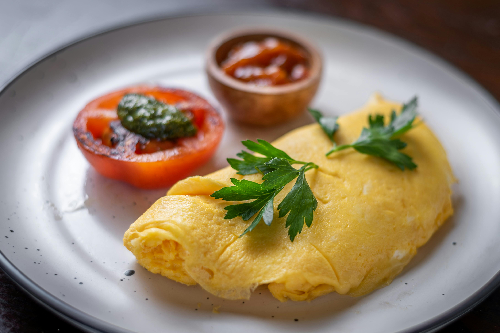

French Omelette

Description
A true French omelette is just eggs and butter, no filling.
The egg is folded for a soft, tender texture.
The technique does take a bit of practice to perfect but you'll be amazed
at just how delicious these few ingredients can be when elevated using
this method.
Ingredients (1 serving)
- 3 large fresh eggs
- ½ teaspoon cold water
- ¼ teaspoon kosher salt
- 2 tablespoons unsalted butter, divided
- 1 pinch cayenne or white pepper to taste (Optional)
Steps
-
Whisk eggs, water, and salt together in a mixing bowl. Whisk until
mixture is very liquid and whites are completely blended in, 1 or 2
minutes.
-
Heat 1 ½ tablespoons butter in a 9- or 10-inch nonstick skillet over
medium-high heat. As soon as butter melts and before it starts to
sizzle, pour in whisked eggs. Stir in a circular pattern with a
heat-proof spatula, lifting and scrambling eggs, shaking the pan to keep
leveling out the mixture, and scraping down the sides. Continue stirring
until shaking the pan no longer levels the eggs.
-
Reduce heat to low. Using the spatula, smooth the surface to move runny
eggs to less runny spots, working toward an even thickness. As soon as
the surface is wet but not runny, remove from heat.
-
Starting at the handle side of the pan, use the spatula to begin rolling
omelette into a cylinder shape, about 3 rolls until omelette is about 2
inches from opposite side of the pan. Use the spatula to fold the last
flap of egg over the top of the cylinder leaving the seam-side up. Add
remaining 1/2 tablespoon butter to the pan. Gently push the butter as it
melts under the omelette.
-
Slide omelette to edge of the pan. Flip onto a plate with the seam-side
down. Even out the shape, if necessary. You can tuck in the ends, if you
like. Brush surface with a bit more butter. Dust with cayenne pepper.
Home